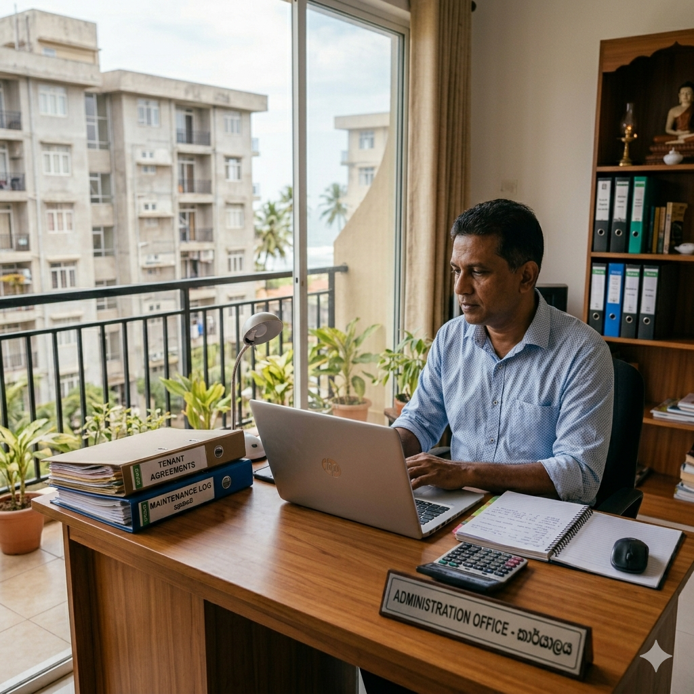
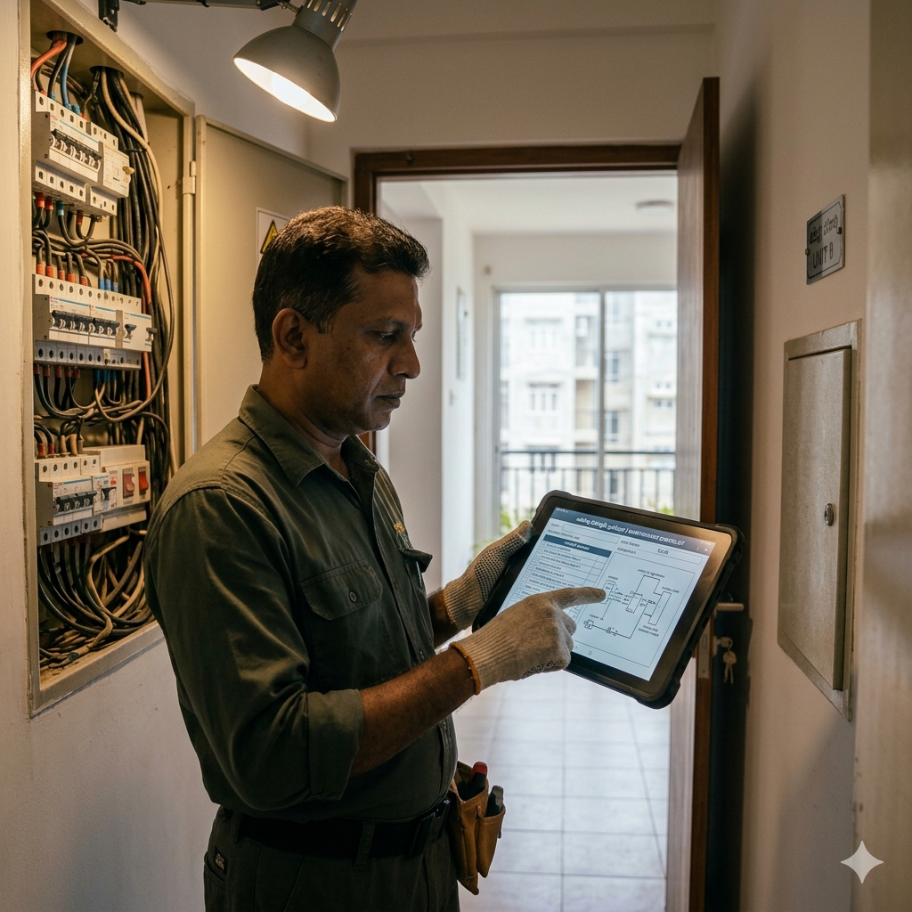

ML
Multilingual ticket analysis
Handles English, Sinhala, Singlish, and mixed maintenance descriptions.
AI assisted apartment maintenance
HelaFixIt AI gives apartment communities one place for residents to report issues, management to make informed maintenance decisions, and technicians to complete repairs. Multilingual local AI helps analyse each ticket before the work starts.
Built for apartment communities
HelaFixIt AI connects residents, apartment management, and technicians through a structured maintenance workflow. Your team gets clearer requests, faster triage, safer urgent response, and better visibility from report to completion.
Centralised requests Keep tickets, assignments, updates, and repair records together.
AI assisted decisions Support category, priority, safety, risk, and technician selection.
Better resident service Make issue reporting and repair tracking easier for apartment communities.
Smart maintenance features
The AI module supports the working maintenance system instead of replacing the people responsible for the building.
Handles English, Sinhala, Singlish, and mixed maintenance descriptions.
Supports faster classification and prioritisation using locally trained machine learning models.
Calculates a 0 to 100 risk score using priority, safety, location, duplicates, history, and ticket context.
Checks for dangerous electrical, fire, flooding, sewage, lift, and related maintenance situations.
Identifies similar active complaints so management can reduce repeated maintenance work.
Supports technician selection using skills, availability, workload, building assignment, and emergency suitability.
One platform for the whole maintenance team
Each user sees the tools needed for their part of the maintenance process while role based access keeps the workflow organised.
Submit maintenance requests, receive safety guidance, and follow repair progress.

Review AI results, manage assignments, monitor urgent tickets, and view maintenance activity.

View assigned jobs, update progress, add repair notes, and complete maintenance tasks.

Manage users, buildings, categories, technician skills, settings, and system access.
Simple maintenance workflow
Normal tickets remain under apartment admin control. Emergency or critical tickets can trigger automatic assignment to a suitable available technician while the admin is notified for review.
Access HelaFixIt AIA resident submits the maintenance issue and location details.
Local AI supports category, priority, safety, risk, and duplicate checks.
The system recommends a technician and follows the normal or emergency assignment path.
The technician updates progress and repair information until the ticket is completed.
For apartment management teams
Offer residents a more professional way to report problems, give your management team better control, and coordinate technicians through one maintenance platform.
Structured resident maintenance requests
AI assisted risk and priority awareness
Smarter technician coordination
Clear repair progress and accountability